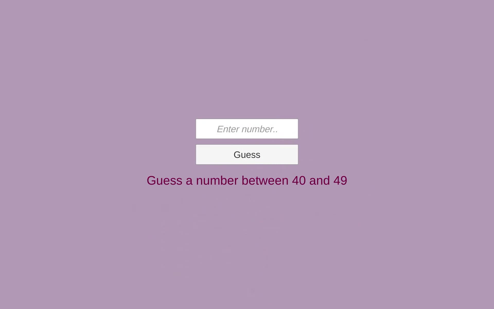

Experience
A number-guessing game built around choosing a value and using the game’s response to narrow down the answer. Each attempt provides another step toward identifying the hidden number.

Description
The player submits a value, reads the feedback, and revises the next guess. Each response reduces uncertainty about the answer and gives the interaction a clear step-by-step structure.
The project concentrates on input, validation, feedback, and a completion state. Its compact interface makes the guessing loop and the result of a correct answer easy to see.
Detailed features
Number entry
A choice reveals new information about a hidden answer. The challenge is to use that feedback to make the next guess more useful than the last.
Feedback between attempts
A choice reveals new information about a hidden answer. The challenge is to use that feedback to make the next guess more useful than the last.
Repeated guessing loop
A choice reveals new information about a hidden answer. The challenge is to use that feedback to make the next guess more useful than the last.
Build summary
The Unity source separates the project into runtime C# components. The saved code includes ui components. The script examples below identify concrete parts of this project’s implementation.
- Technology
- Unity
- Scope
- Unity project
- Feature focus
- Number entry
Implementation details
Implementation examples
GameLogic.cs
Feature video
Project recording · 1920 × 1200 · Original resolution